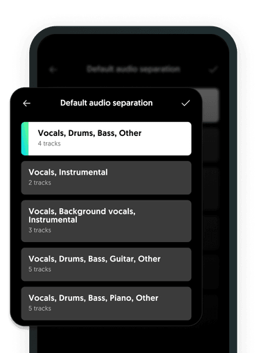
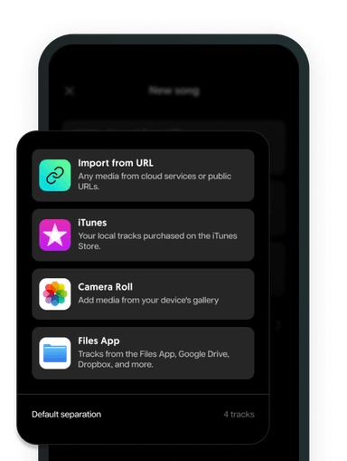

Moises 快问快答：一首歌拆成人声鼓贝斯到底靠不靠谱
从产品定位、分轨模式、格式支持到三档套餐数字，七个读者真会问的问题一口气答完，看完就知道要不要装。
整理一篇关于 Moises 的快问快答——把乐手圈最常讨论的七个问题攒到一起，每条答案第一句就给结论。
Q1：Moises 到底是什么，一个装在手机里的练习室？
是，核心就是这句话：把任意一首歌丢进去，AI 拆成独立声部——人声、鼓、贝斯、吉他、键盘——然后你可以在播放时随意静音、独奏、调音量、变调、变速。练吉他的把吉他轨关掉跟着剩余乐队弹，练鼓的把鼓轨静音自己敲补，歌手关掉人声轨当伴奏唱。拆轨只是手段，「跟着自己的歌练」才是目的。它 2019 年由一位业余鼓手创立，初衷就是解决自己练鼓时找不到合适伴奏的问题，目前 Moises官网 口径称有超过 7000 万音乐人在用，2024 年拿过 Apple iPad 年度应用奖。想上手体验的话安装包从官方下载拿。

Q2：分轨模式这么多，二轨四轨五轨到底该怎么选？
别背模式，按「你要静音什么」反推就行。默认首选四轨——人声、鼓、贝斯、其他，跟练够用；鼓手起步就四轨，静音鼓轨即可。吉他手直接上五轨吉他版，多花一点处理时间换来独立的吉他轨；键盘手同理走五轨钢琴版。歌手只要消原唱做伴奏，二轨最快；和声也想单独拎出来研究就选三轨。一首歌拆完发现轨数不够用，换个模型重新跑一遍，原结果不会被覆盖。想研究各轨的使用技巧可以翻一下Moises文档。
Q3：能处理哪些音视频格式，老录音会不会翻车？
音频类官方支持 MP3、FLAC、WAV、AIFF、OGG、WMA 等九种，视频类覆盖 MP4、MOV、MKV、WEBM、FLV 等容器。实操原则很简单：有损压缩源（MP3、AAC）直接传，转无损不会变清晰；手头是无损（FLAC、WAV、AIFF）优先传无损——分离质量的上限由源决定；视频源不用先抽音频轨，直接丢进去；老录音或冷门容器转成 WAV 最稳。三个高频坑要记牢：DRM 保护的购买音乐无法导入，遇到报错先检查是不是这个原因；极老设备录的 22kHz 素材处理质量天花板就低，源不好别怪模型；超长文件名和特殊字符偶尔引发导入异常，重命名成短名再传。

Q4：免费、Premium、Pro 三档的核心数字怎么对？
免费档每月可处理 5 首歌，单文件上限 5 分钟，Hi-Fi 高保真模型用不了，每月 10 个 AI 积分。Premium 每月不限量，单文件上限放宽到 20 分钟，Hi-Fi 部分可用，200 个 AI 积分。Pro 不限量不限时长，Hi-Fi 完整可用，AI 积分无限。和弦识别和智能节拍器在免费档有个「每首前 1 分钟」的截断——很多人升级就是因为这个。判断要不要升级的最快方法：用免费档完整练一首歌，感受 1 分钟处被掐断的频率。单文件超出上限时有个小技巧，把音频切成上限以内的分段分别上传处理，注意在乐句间隙下刀别切断节拍上下文。
Q5：和网上那些「消原唱做伴奏」的小工具有什么本质区别？
消原唱只是 Moises 能力清单里最小的一格。它把人声拆出来之后，你可以单独调这个人声轨的音量、静音、导出、配合和弦显示和智能节拍器一起用——拆完之后的一切操作才构成完整的练习闭环。只把它当消原唱用，等于买了一套架子鼓只用来当凳子坐。
Q6：哪些人在用，乐手圈的真实用法是什么？
鼓手用来静音原鼓轨跟着节拍器练填充，吉他手静音吉他轨做跟弹练习，键盘手同理；歌手关掉人声轨当伴奏自己唱，想研究和声可以拆三轨把背景和声单独拎出来听；扒歌分析的人直接上轨数最多的模型，信息越全越好。Charlie Puth 是首席音乐官，Slipknot 鼓手 Eloy Casagrande、格莱美得主 Cory Henry 都是公开站台的用户。
Q7：装在手机上还是电脑上，体验有差别吗？
手机端、桌面端、网页版三端都能用，核心操作逻辑一致——导入菜单底部点「默认分离」就能进模式清单勾选。付费账号在桌面端和网页版会看到 Hi-Fi 标记的模型选项，这是免费档没有的。处理完的素材三端云同步，手机上练到一半换电脑继续没问题。
最后一句：如果你是想找个消原唱的工具，那它有点重；如果你是真的跟着歌练乐器或练唱歌，它是目前乐手圈里反馈最统一的那一个，值得装。这套整理出来的资料散落在 GitHub、Gitee 和 GitCode 三处，哪个访问顺手用哪个。